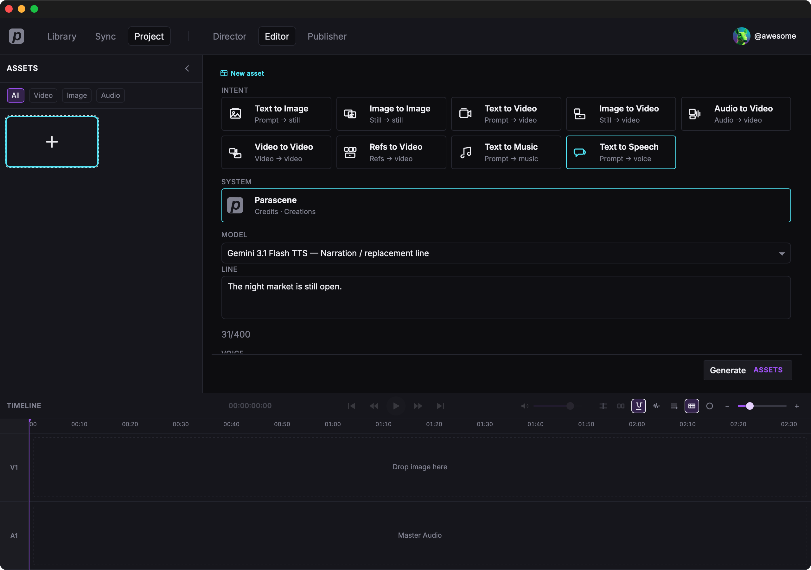
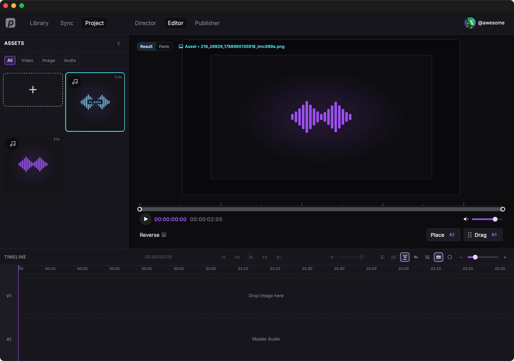
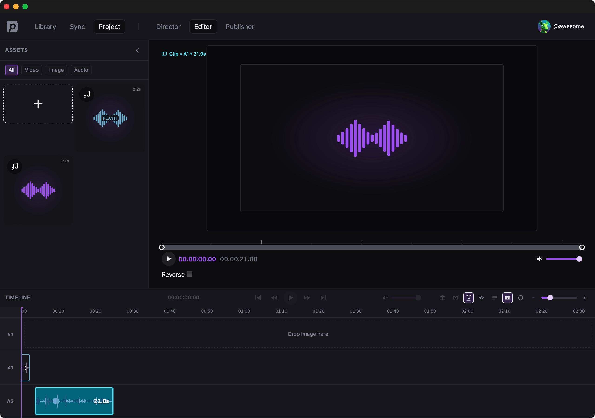

Generate speech and music
We'll stay in the open project and make two spoken lines plus a short background score. Text to Speech and Text to Music, Parascene. Then we'll put speech on A1 and the score on A2.
Two speakers
- Click Editor in the top bar.
- In Assets (left), click the + tile labeled Add asset.
- Choose Text to Speech.
- Under System, choose Parascene (Credits · Creations).
-
Under Model, pick
Gemini 3.1 Flash TTS. First voice Kore, then a second line with Puck.
We typed these two lines.
The night market is still open.Then we should walk down together.
Each line lands in this project’s Assets.
Background music
- Open Add asset again and choose Text to Music.
- Keep Parascene. Pick
Lyria 3.
We typed this into Prompt.
Warm night market, soft strings under lantern light, no vocals
Dual audio tracks
- Drag both spoken clips onto A1, one after the other.
- Turn on the second audio lane, then drop the score on A2 so it sits under both lines.

Where to go from here
Generate an image — a still in this same Editor, or Generate a video with audio — lip-sync a still to a spoken file.